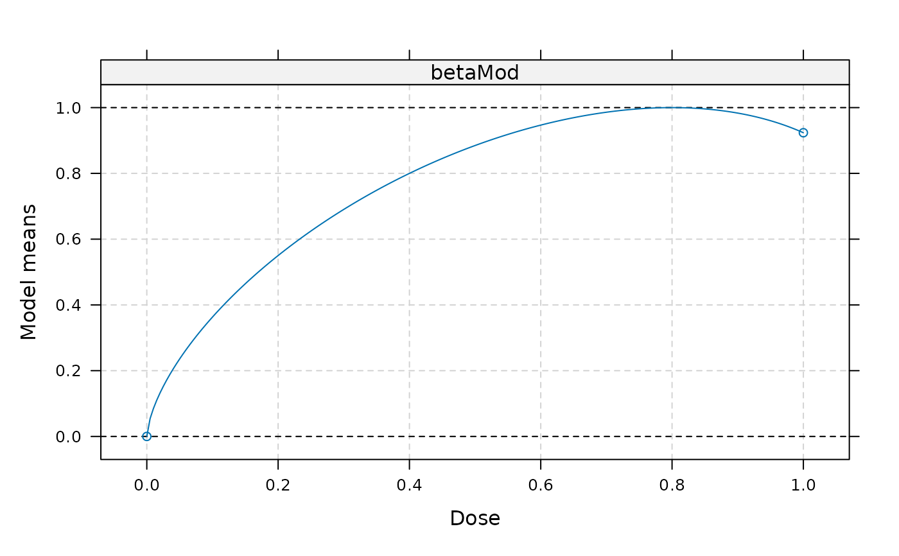
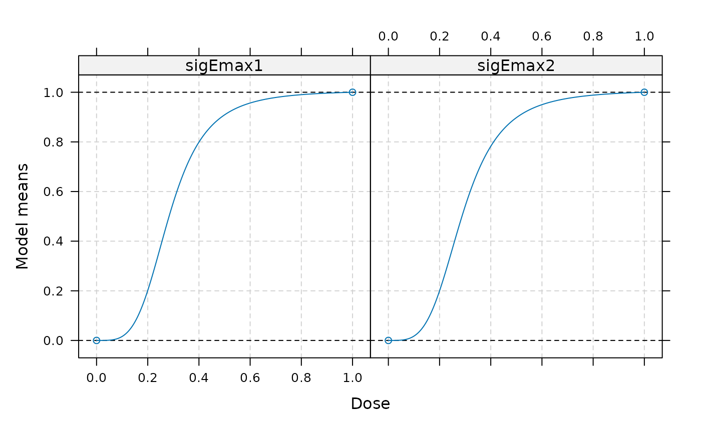
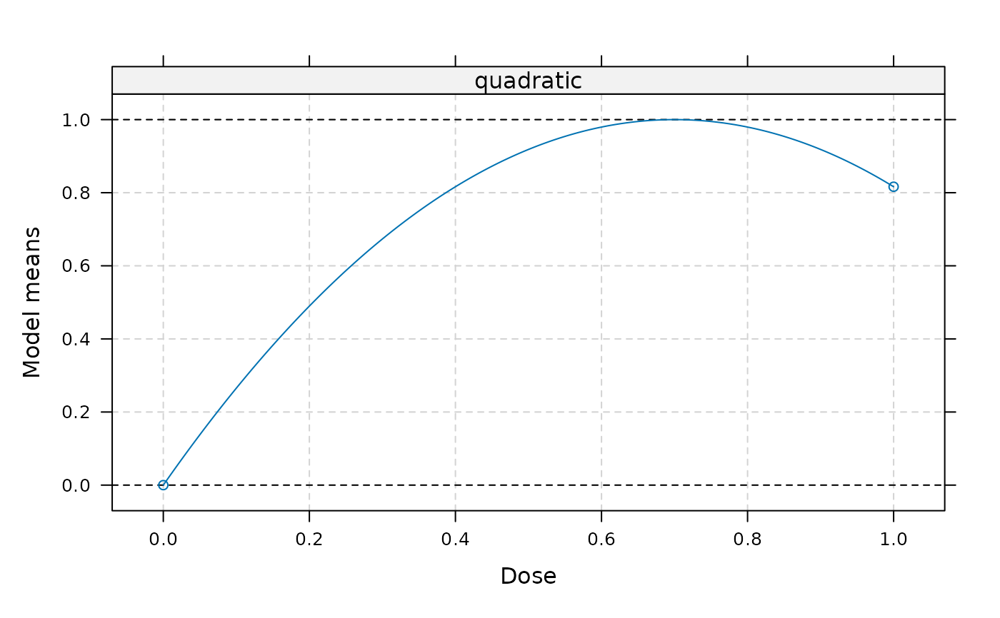
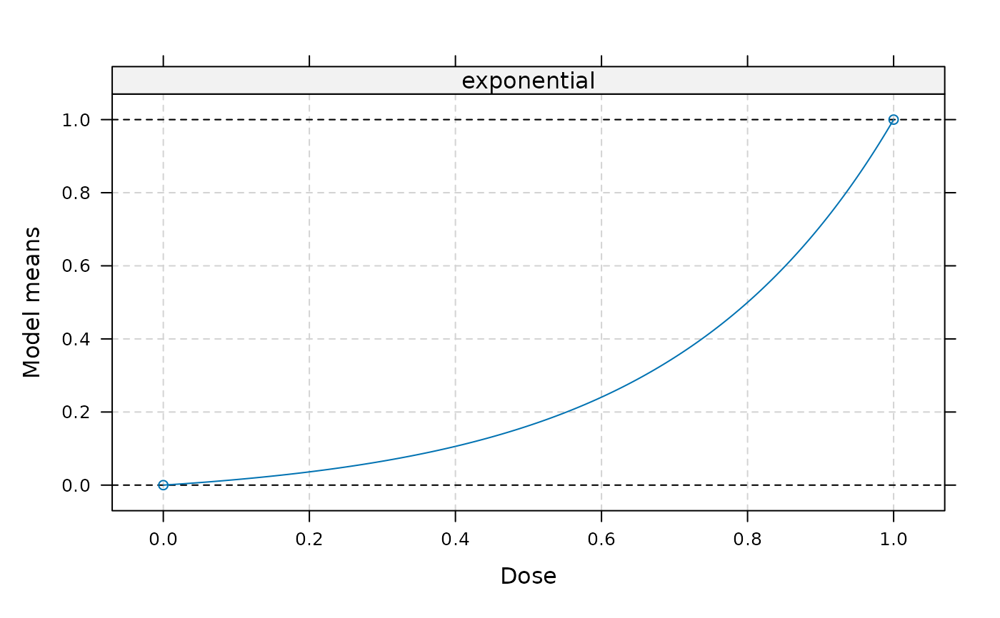

Calculates guesstimates for standardized model parameter(s) using the general approach described in Pinheiro et al. (2006).
Usage
guesst(
d,
p,
model = c("emax", "exponential", "logistic", "quadratic", "betaMod", "sigEmax"),
less = TRUE,
local = FALSE,
dMax,
Maxd,
scal
)Arguments
- d
Vector containing dose value(s).
- p
Vector of expected percentages of the maximum effect achieved at d.
- model
Character string. Should be one of "emax", "exponential", "quadratic", "betaMod", "sigEmax", "logistic".
- less
Logical, only needed in case of quadratic model. Determines if d is smaller (less=TRUE) or larger (less=FALSE) than dopt (see Pinheiro et al. (2006) for details).
- local
Logical indicating whether local or asymptotic version of guesstimate should be derived (defaults to FALSE). Only needed for emax, logistic and sigEmax model. When local=TRUE the maximum dose must be provided via Maxd.
- dMax
Dose at which maximum effect occurs, only needed for the beta model
- Maxd
Maximum dose to be administered in the trial
- scal
Scale parameter, only needed for the beta model
Details
Calculates guesstimates for the parameters \(\theta_2\) of the standardized model function based on the
prior expected percentage of the maximum effect at certain dose levels. Note that this function should be used
together with the plot.Mods() function to ensure that the guesstimates are reflecting the prior beliefs.
For the logistic and sigmoid emax models at least two pairs (d,p) need to be specified.
For the beta model the dose at which the maximum effect occurs (dMax) has to be specified in addition to the (d,p) pair.
For the exponential model the maximum dose administered (Maxd) needs to be specified in addition to the (d,p) pair.
For the quadratic model one (d,p) pair is needed. It is advisable to specify the location of the maximum within the dose range with this pair.
For the emax, sigmoid Emax and logistic model one can choose between a local and an asymptotic version. In the local version one explicitly forces the standardized model function to pass through the specified points (d,p). For the asymptotic version it assumed that the standardized model function is equal to 1 at the largest dose (this is the approach described in Pinheiro et al. (2006)). If the local version is used, convergence problems with the underlying nonlinear optimization can occur.
References
Bornkamp B., Pinheiro J. C., and Bretz, F. (2009). MCPMod: An R Package for the Design and Analysis of Dose-Finding Studies, Journal of Statistical Software, 29(7), 1–23
Pinheiro, J. C., Bretz, F., and Branson, M. (2006). Analysis of dose-response studies - modeling approaches, in N. Ting (ed.), Dose Finding in Drug Development, Springer, New York, pp. 146–171
Examples
## Emax model
## Expected percentage of maximum effect: 0.8 is associated with
## dose 0.3 (d,p)=(0.3, 0.8), dose range [0,1]
emx1 <- guesst(d=0.3, p=0.8, model="emax")
emax(0.3,0,1,emx1)
#> ed50
#> 0.8
## local approach
emx2 <- guesst(d=0.3, p=0.8, model="emax", local = TRUE, Maxd = 1)
emax(0.3,0,1,emx2)/emax(1,0,1,emx2)
#> ed50
#> 0.8
## plot models
models <- Mods(emax=c(emx1, emx2), doses=c(0,1))
plot(models)
## Logistic model
## Select two (d,p) pairs (0.2, 0.6) and (0.2, 0.95)
lgc1 <- guesst(d = c(0.2, 0.6), p = c(0.2, 0.95), "logistic")
logistic(c(0.2,0.6), 0, 1, lgc1[1], lgc1[2])
#> [1] 0.20 0.95
## local approach
lgc2 <- guesst(d = c(0.2, 0.6), p = c(0.2, 0.95), "logistic",
local = TRUE, Maxd = 1)
r0 <- logistic(0, 0, 1, lgc2[1], lgc2[2])
r1 <- logistic(1, 0, 1, lgc2[1], lgc2[2])
(logistic(c(0.2,0.6), 0, 1, lgc2[1], lgc2[2])-r0)/(r1-r0)
#> [1] 0.2000062 0.9500019
## plot models
models <- Mods(logistic = rbind(lgc1, lgc2), doses=c(0,1))
plot(models)
## Beta Model
## Select one pair (d,p): (0.4,0.8)
## dose, where maximum occurs: 0.8
bta <- guesst(d=0.4, p=0.8, model="betaMod", dMax=0.8, scal=1.2, Maxd=1)
## plot
models <- Mods(betaMod = bta, doses=c(0,1), addArgs = list(scal = 1.2))
plot(models)

## Sigmoid Emax model
## Select two (d,p) pairs (0.2, 0.6) and (0.2, 0.95)
sgE1 <- guesst(d = c(0.2, 0.6), p = c(0.2, 0.95), "sigEmax")
sigEmax(c(0.2,0.6), 0, 1, sgE1[1], sgE1[2])
#> [1] 0.20 0.95
## local approach
sgE2 <- guesst(d = c(0.2, 0.6), p = c(0.2, 0.95), "sigEmax",
local = TRUE, Maxd = 1)
sigEmax(c(0.2,0.6), 0, 1, sgE2[1], sgE2[2])/sigEmax(1, 0, 1, sgE2[1], sgE2[2])
#> [1] 0.1999998 0.9500006
models <- Mods(sigEmax = rbind(sgE1, sgE2), doses=c(0,1))
plot(models)

## Quadratic model
## For the quadratic model it is assumed that the maximum effect occurs at
## dose 0.7
quad <- guesst(d = 0.7, p = 1, "quadratic")
models <- Mods(quadratic = quad, doses=c(0,1))
plot(models)

## exponential model
## (d,p) = (0.8,0.5)
expo <- guesst(d = 0.8, p = 0.5, "exponential", Maxd=1)
models <- Mods(exponential = expo, doses=c(0,1))
plot(models)
